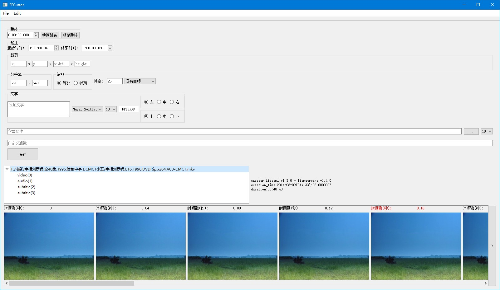

视频编辑器 ffcutter
ffcutter 初版写完有段日子了。本想着把功能再丰富下， UI 规范后再开源，无奈此后一连数月都忙于新家的智能家居系统的设计开发，ffcutter 就淡忘了。就以现状开源了吧，献给有缘人 。

开发环境
- C++17
- Qt 5.15
- FFmpeg 4.3.1
- Visual Studio Community 2019
代码结构

如上图，核心能力以 fccore 动态链接库形式提供，FCService 为接口类。对 FFmpeg 各个功能模块再做一层类封装，简化操作步骤，方便复用。
类名均以
FC为前缀，取自 Fast forword Cutter。
功能介绍
快速跳转
跳转到指定时间戳后的第一个关键帧。
所谓快速，即只解封装，不解码。对 h264 等帧间编码格式，只有关键帧是内容自足的，B 帧、P 帧的图像内容均依赖相邻帧共同还原。
具体技术细节可参考 FFmpeg AVSEEK_FLAG_BACKWARD 文档。
精确跳转
跳转到不晚于指定时间戳后的第一帧。
跳转耗时同 GOP 大小有很大关系。如果恰好需要跳转到某一关键帧之后的一帧，就需要解码 GOP - 1 帧。
通过预览图快速确定视频截取的起止时间
左键双击预览图，使用预览图对应帧的时间戳填充起始时间编辑框；右键双击，快速填充结束时间编辑框。
如要截取
jpg等静态图，左键双击要截取的帧，右键双击下一帧。
文字
文字以 FFmpeg drawtext Filter 实现，支持 文本表达式 以显示动态内容，但为了简化使用方式，只支持全视频添加固定文字，不支持指定时间段。
文字支持自选字体，作者存放于 repo 中的几种字体，仅为测试之用，请在使用前确认其授权形式。
字幕
以 FFmpeg subtitles Filter 实现，支持 srt ass 等格式。除支持复杂的时间戳规则外，字幕同文字另一个不同的地方在于，字幕是以流（stream）的形式存储于容器文件中的，而非修改视频帧，将文字绘制于上。
自定义滤镜
理论上支持所有其它 FFmpeg Filter，语法同 ffmpeg.exe，ffcutter 会将其拼接到上边所列 Filter 之后。
不足之处
UI 简陋
敝人区区一草莽大汉，于此精巧之工，实无能为力也~
产品思路感人
没有时间线的概念，不能预览全视频；没有视频回放；没有基于音频的剪辑。
多段剪辑、拼接
一次只能剪辑一个片段。理想的情况下，应支持多段视频剪辑，然后内存中直接拼接成一个视频。